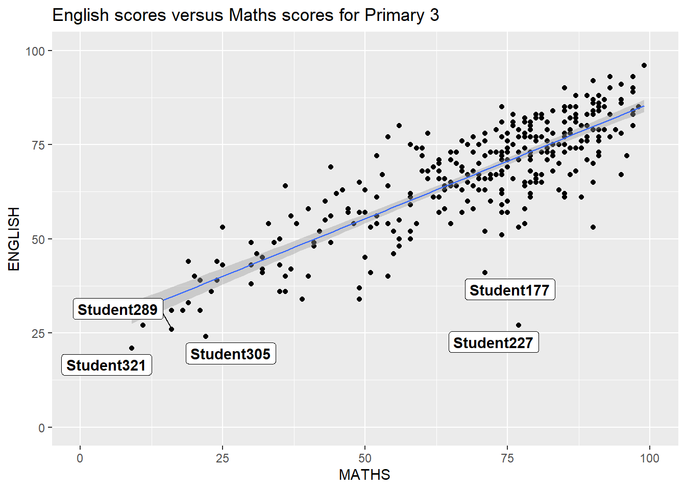
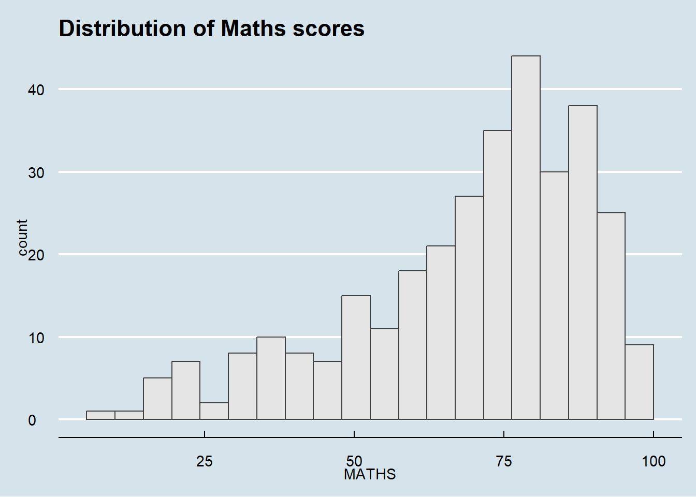
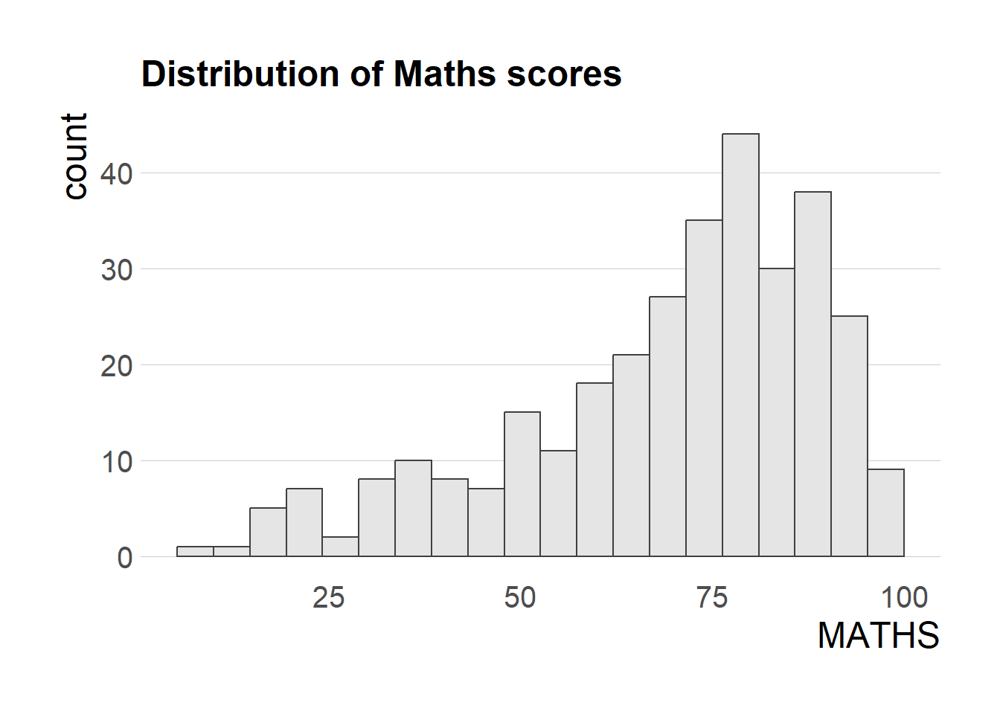
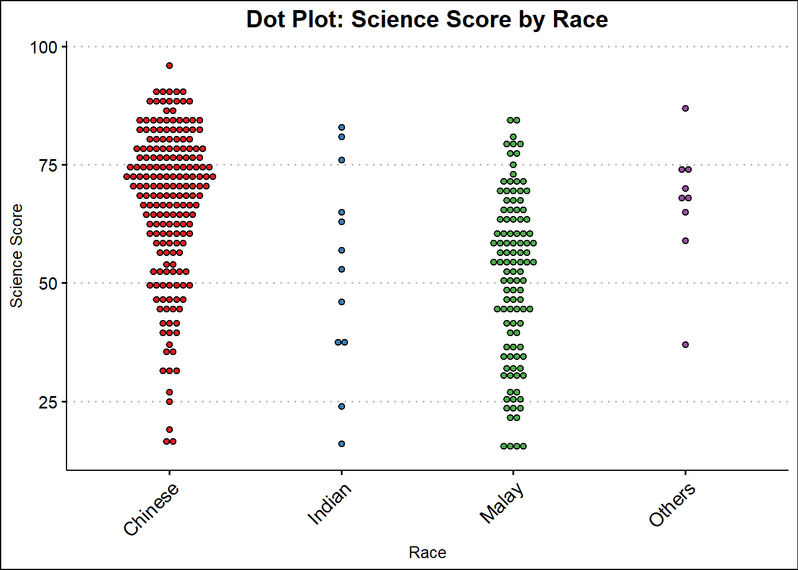
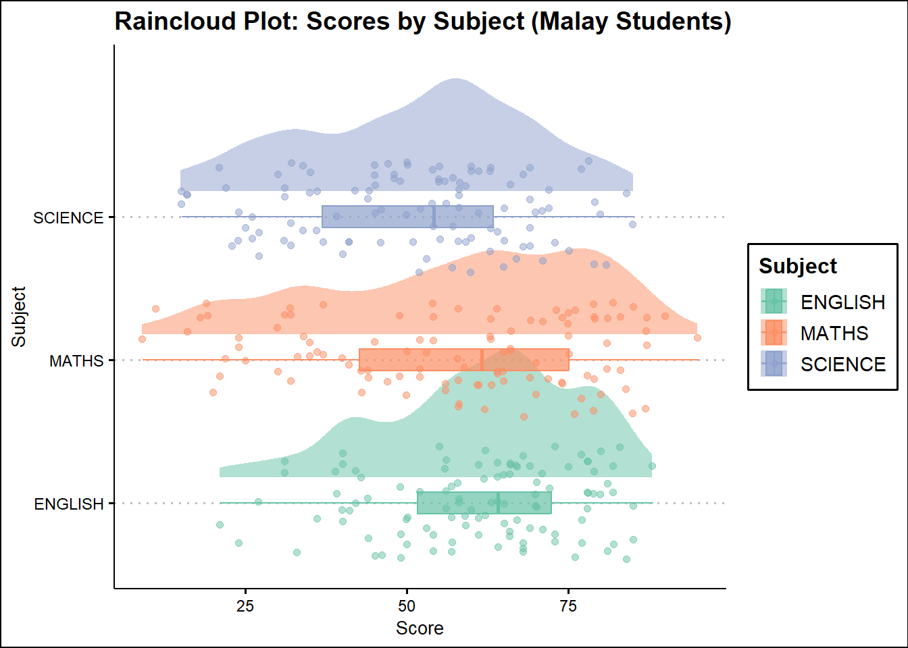

pacman::p_load(ggrepel, patchwork,
ggthemes, hrbrthemes,
tidyverse) Hands-on_Ex02
Getting started
Installing and loading the required libraries
Importing the data
exam_data <- read_csv("data/Exam_data.csv")Rows: 322 Columns: 7
── Column specification ────────────────────────────────────────────────────────
Delimiter: ","
chr (4): ID, CLASS, GENDER, RACE
dbl (3): ENGLISH, MATHS, SCIENCE
ℹ Use `spec()` to retrieve the full column specification for this data.
ℹ Specify the column types or set `show_col_types = FALSE` to quiet this message.Beyond ggplot2 Annotation: ggrepel
Annotation challenge when having large number of data points
ggplot(data=exam_data,
aes(x= MATHS,
y=ENGLISH)) +
geom_point() +
geom_smooth(method=lm,
size=0.5) +
geom_label(aes(label = ID),
hjust = .5,
vjust = -.5) +
coord_cartesian(xlim=c(0,100),
ylim=c(0,100)) +
ggtitle("English scores versus Maths scores for Primary 3")Warning: Using `size` aesthetic for lines was deprecated in ggplot2 3.4.0.
ℹ Please use `linewidth` instead.`geom_smooth()` using formula = 'y ~ x'
Solution: ggrepel
ggplot(data=exam_data,
aes(x= MATHS,
y=ENGLISH)) +
geom_point() +
geom_smooth(method=lm,
size=0.5) +
geom_label_repel(aes(label = ID),
fontface = "bold") +
coord_cartesian(xlim=c(0,100),
ylim=c(0,100)) +
ggtitle("English scores versus Maths scores for Primary 3")`geom_smooth()` using formula = 'y ~ x'Warning: ggrepel: 317 unlabeled data points (too many overlaps). Consider
increasing max.overlaps
Beyond ggplot2 Themes
ggplot2 built-in themes
ggplot(data=exam_data,
aes(x = MATHS)) +
geom_histogram(bins=20,
boundary = 100,
color="grey25",
fill="grey90") +
theme_gray() +
ggtitle("Distribution of Maths scores") 
ggtheme package: Extra Themes, Scales and Geoms for ‘ggplot2’
Example 1: The Economist theme
ggplot(data=exam_data,
aes(x = MATHS)) +
geom_histogram(bins=20,
boundary = 100,
color="grey25",
fill="grey90") +
ggtitle("Distribution of Maths scores") +
theme_economist()
Example 2: Stata theme
ggplot(data=exam_data,
aes(x = MATHS)) +
geom_histogram(bins=20,
boundary = 100,
color="grey25",
fill="grey90") +
ggtitle("Distribution of Maths scores") +
theme_stata()hrbthems package: Additional Themes, Theme Components and Utilities for ‘ggplot2’
- axis_title_size: set the font size of the axis title
- base_size: set base font size for most text elements in the plot, including axis tick labels, legend, etc.
- grid: indicate whether there are gridlines in the plot or not
- base_family: specify which font is used
ggplot(data=exam_data,
aes(x = MATHS)) +
geom_histogram(bins=20,
boundary = 100,
color="grey25",
fill="grey90") +
ggtitle("Distribution of Maths scores") +
theme_ipsum(axis_title_size = 18,
base_size = 15,
grid = "Y",
base_family = "sans")
Beyond Single Graph: patchwork methods
Create individual graph
p1 <- ggplot(data=exam_data,
aes(x = MATHS)) +
geom_histogram(bins=20,
boundary = 100,
color="grey25",
fill="grey90") +
coord_cartesian(xlim=c(0,100)) +
ggtitle("Distribution of Maths scores")p2 <- ggplot(data=exam_data,
aes(x = ENGLISH)) +
geom_histogram(bins=20,
boundary = 100,
color="grey25",
fill="grey90") +
coord_cartesian(xlim=c(0,100)) +
ggtitle("Distribution of English scores")p3 <- ggplot(data=exam_data,
aes(x= MATHS,
y=ENGLISH)) +
geom_point() +
geom_smooth(method=lm,
size=0.5) +
coord_cartesian(xlim=c(0,100),
ylim=c(0,100)) +
ggtitle("English scores versus Maths scores for Primary 3")Combine two ggplot2 graphs
p1 + p2
Combine multiple ggplot2 graphs
- “/” operator to stack two ggplot2 graphs
- “|” operator to place the plots beside each other
- “()” operator the define the sequence of the plotting
(p1 / p2) | p3`geom_smooth()` using formula = 'y ~ x'Create a composite figure with tag
((p1 / p2) | p3) +
plot_annotation(tag_levels = 'I')`geom_smooth()` using formula = 'y ~ x'Create figure with insert
- Place one or several plots or graphic elements freely on top or below another plot.
p3 + inset_element(p2,
left = 0.02,
bottom = 0.7,
right = 0.5,
top = 1)`geom_smooth()` using formula = 'y ~ x'Combine patchwork and ggtheme
patchwork <- (p1 / p2) | p3
patchwork & theme_economist()`geom_smooth()` using formula = 'y ~ x'Further self-practice
1. Boxplot: Science Score Distribution by Class
median_data <- exam_data %>%
group_by(CLASS) %>%
summarise(median_science = median(SCIENCE, na.rm = TRUE))
p1 <- ggplot(exam_data, aes(x = CLASS, y = SCIENCE)) +
geom_boxplot(outlier.shape = 16, outlier.size = 1.2, width = 0.7, position = position_dodge(0.8)) +
scale_fill_brewer(palette = "Set2") +
geom_text_repel(data = median_data,
aes(x = CLASS, y = median_science, label = round(median_science, 1)),
fontface = "bold",
size = 3,
nudge_y = 0.5) + # Nudge to avoid overlap
theme_solarized_2() +
labs(title = "Boxplot: Science Score by Class", x = "Class", y = "Science Score")
p12. Dot Plot: Science Score Distribution by Race
p2 <- ggplot(exam_data, aes(x = RACE, y = SCIENCE, fill = RACE)) +
geom_dotplot(
binaxis = 'y',
stackdir = 'center',
dotsize = 0.7,
binwidth = 2, # Try 1 or 2 based on your data's spread
method = 'dotdensity'
) +
labs(
title = "Dot Plot: Science Score by Race",
x = "Race",
y = "Science Score"
) +
scale_fill_brewer(palette = "Set1") +
theme_clean() +
theme(
axis.text.x = element_text(angle = 45, hjust = 1, size = 12),
axis.text.y = element_text(size = 11),
plot.title = element_text(size = 15, face = "bold", hjust = 0.5),
legend.position = "none" # Remove legend since color matches x-axis
)
p2
3. Pie Chart: Race proportion within each Class
library(scales)
Attaching package: 'scales'The following object is masked from 'package:purrr':
discardThe following object is masked from 'package:readr':
col_factorpie_data <- exam_data %>%
group_by(CLASS, RACE) %>%
summarise(count = n(), .groups = "drop") %>%
group_by(CLASS) %>%
mutate(
prop = count/sum(count),
percent = percent(prop, accuracy = 1),
lab = ifelse(prop > 0.20, percent, "") # only show label if >20% for readability
)
p3 <- ggplot(pie_data, aes(x = "", y = prop, fill = RACE)) +
geom_col(width = 1, color = "white", show.legend = TRUE) + # white borders
coord_polar(theta = "y") +
facet_wrap(~CLASS, ncol = 3) +
geom_text(
aes(label = lab),
position = position_stack(vjust = 0.6),
size = 2.5,
color = "black"
) +
scale_fill_brewer(palette = "Pastel1") +
labs(title = "Pie Chart: Race Proportion by Class", x = NULL, y = NULL, fill = "Race") +
theme_excel(base_size = 10) +
theme(
axis.text = element_blank(),
axis.ticks = element_blank(),
panel.grid = element_blank(),
strip.text = element_text(size = 10, face = "bold"),
plot.title = element_text(size = 12, face = "bold", hjust = 0.5)
)
p34. Raincloud plot: Score Distribution by Subject (Malay Students)
library(dplyr)
malay_data <- exam_data %>%
filter(RACE == "Malay")
library(tidyr)
malay_long <- malay_data %>%
pivot_longer(
cols = c(ENGLISH, MATHS, SCIENCE),
names_to = "Subject",
values_to = "Score"
)
library(ggplot2)
library(ggdist)
ggplot(malay_long, aes(x = Score, y = Subject, fill = Subject, color = Subject)) +
ggdist::stat_halfeye(
adjust = 0.6,
width = 0.7,
.width = 0,
justification = -0.2,
point_color = NA,
alpha = 0.5
) +
geom_boxplot(
width = 0.15,
outlier.shape = NA,
alpha = 0.7,
position = position_nudge(x = 0.15)
) +
geom_jitter(
width = 0.12,
size = 1.6,
alpha = 0.5
) +
labs(
title = "Raincloud Plot: Scores by Subject (Malay Students)",
x = "Score",
y = "Subject"
) +
scale_fill_brewer(palette = "Set2") +
scale_color_brewer(palette = "Set2") +
theme_clean()